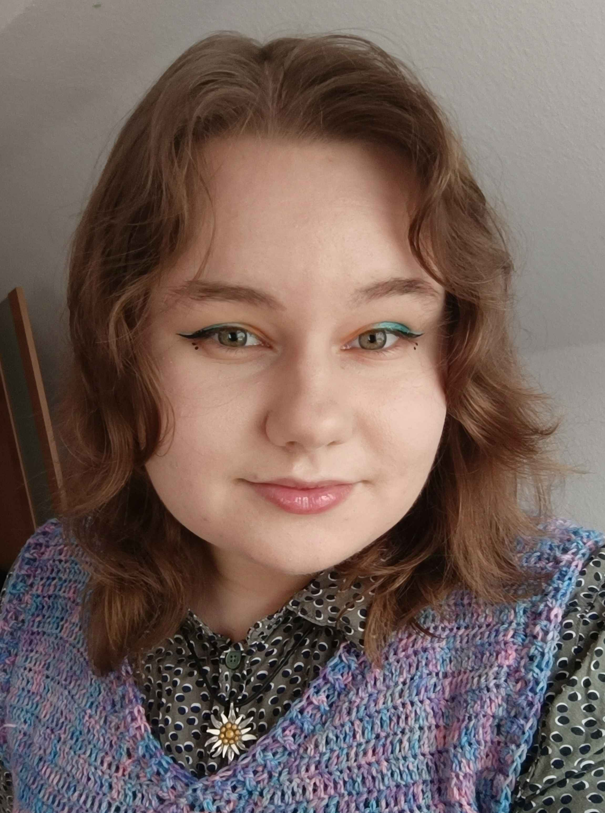

Curriculum Vitae - Rita Gurgždaitytė

I am a young game programmer, finishing my studies in TH Köln (Cologne Game Lab). I enjoy working on narrative-heavy, explosive, and intriguing games.
Basic information
Birthday: 2002-06-26
Living in: Pilviškiai, Vilnius
Languages I am fluent in: Lithuanian, English, German
E-mail: ritagurgzd@gmail.com
Education
TH Köln (Cologne Game Lab)
Degree: Bachelor of Arts (BA)
Course Title: Digital Games (Game Programming)
Start of study: 2021
Graduating in: February 2025
Kazlų Rūdos Kazio Griniaus Gimnazija
Degree: Highschool Diploma
Study duration: 2016 - 2020
Work experience
09.2022 – 01.2025 – Holo Games GmbH, VR guide at Holo Games VR World in Köln Arcaden (part-time)
My job’s responsibilities include greeting customers and informing them about all the VR devices and stations in our arcade, helping them strap in and play VR games, and troubleshooting the VR stations when there are issues. I have practical and technical experience with VR devices, VR games and newest VR technologies.
09.2023-02.2024 – Studio Fizbin GmbH, Unity (C#) Game Programming intern (full-time)
This was a 6-month mandatory internship for my Bachelor’s study program. I was part of the programming team, working on an action roguelike “Reignbreaker”. Some of my tasks were: extending existing UI, Combat and Enemy systems, converting some UI to UIToolkit, fixing bugs, QA.
See more about the project I worked on: Reignbreaker
02.2021 – 06.2021 – UAB „Lautė“, e-bike programmer in AT Zweirad GmbH (full-time)
This was a manual job at an E-bike factory. I was in charge of mounting the e-bike displays and uploading the right software data on them.
Skills
Languages:
- C# - highly skilled, most of my past projects were coded in this language.
- C++ - I am comfortable using this language.
- Javascript - I have basic knowledge of this language.
Game Engines:
- Unity - over 4 years of experience working on projects both in 2D and 3D.
- Unreal - I have some experience, a couple small scale projects.
- Godot - I have minimal experience.
Other skills:
- Version control systems - I have used Git repositories with various GUIs for team projects I was part of.
- Team / task management - I have worked in agile work style, have implemented and took part in Scrum method, and I am confident in using Trello, Jira and other project management systems.
- HTML / CSS - I am learning web development for fun, and have created this website from scratch.
- 2D digital art - mostly paintings, but I have created some game assets and logos in the past.
- Music production - I have finished Rimvydas Žigaitis School of Arts Music course in 2016, and work with DAWs like Reaper and FL Studio as a hobby.